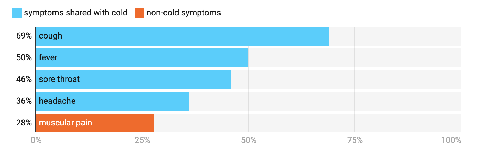
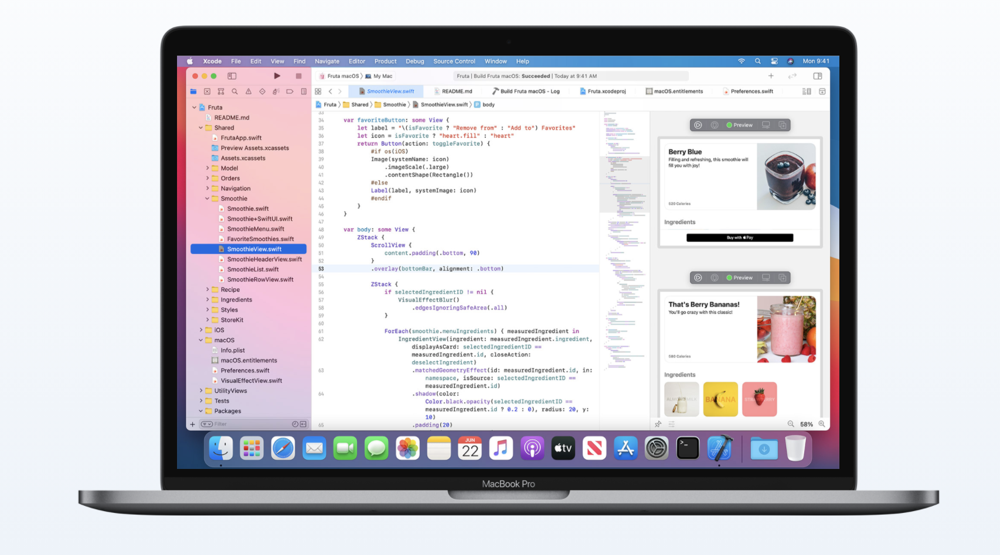

As it stands, COVID-19 proceeds to take over majority of the world at a rapid pace. Due to this virus being highly infectious, we are now having to experience our lives in a completely different way and make a great adjustment to what we call our ‘normal’ routine. I have created this project idea to support the current global pandemic crisis. An application that is used as a database for daily temperatures recorded by a contactless thermometer in a workplace.

Listed above are statistics of verified patient symptoms during a testing period in Victoria of 19:00 AEDT 14 March to
23:59 AEDT 22 March 2020.
As 50% of the patients tested with a fever (≥ 38°C), it is quite clear that this is a common symptom present within this virus
that has a reasonably high importance of being detected early on before it's too late. I believe that this program could assist with
the fluidity and speed of contracting the virus from employees who have not yet tested for COVID.
A large number of cases throughout communities in Australia are initially showing no symptoms, making it quite challenging to identify if a person is infected. The idea behind getting this application to function correctly would require all employees within a business to have their temperature tested each day before commencing their shift. The thermometer will show the reading on the device itself, and the employee would be asked to enter the results into the application list for the day via a generated QR code submission form
Upon scanning the QR code on the staff members smartphone, it will redirect them to a data entry submission form on a webpage, therefore allowing them to enter their name, staff ID and temperature reading for the day. It will additionally have boxes to check off that agree to guidelines of a staff member not showing cold and flu symptoms, no recent travels overseas, or close contact with anyone who has had the virus. After submission all details will be stored to the application.
This program can obtain the acquired results to a table that is navigated by searching through alphabetical names, alongside a staff ID. The readings are recorded with a date and time, allowing management to have a seamless and efficient method for tracking and preventing a spread of COVID-19 within their workplace. If the temperature is flagged as high (≥38°C), the webpage will alert the employee. The application can give them the option to share their result with a nominated recipient as a PDF document, whether that be to send an email to themself, a General Practitioner, or clinic to provide a relevant symptom for being tested for the virus. This product could also be valuable to health services when reaching out to an employer and requesting data for contact tracing within the community. The business would be able to gather data within a specific time period from the application itself, thus avoiding the need to search through old emails, or scan and fax further documentation which would add unnecessary steps to the process.
In order to get this project to operate appropriately, it would require each workplace to have the following devices:
• iPad connected to a Wi-Fi network and business email, that can access the application that displays listings and shares results on a PDF document.
• Contactless thermometer to record accurate temperature readings
• Graphic designers who would be able to create an original design for the operating interface
• Smartphone camera or QR code reader application that can access the QR barcode information.

Xcode is a programming tool established by Apple that is utilised for creating applications that can run on iOS, Mac or iPadOS devices. It is the most commonly handled resource fit for this purpose, as Apple has such a fluid ecosystem currently running amongst their devices. This would make this job as simple as possible to accomplish and is where many hours would need to go into designing and constructing the project from the ground up.
As this project would take some time to construct as a start-up with a team of back-end and front-end developers, and graphic designers. The platform could initially launch on iOS and iPadOS devices, and at a later date reach Android, Windows and Mac OS. So that multiple pieces of hardware would eventually be able to keep track of any the information needed over a cloud-based network.
There would also need to be software code written to allow the application to act as a third-party API (database) that retrieves the responses that are submitted through the webpage form. Additionally, more programming would need to be completed to create a mail composer for the results that can share the data on a PDF data to recipients.
If successful, I believe this program could have a significant impact on preventing outbreaks of Corona Virus around different places in the world. Suppose symptoms can be detected early. In that case, people can avoid transmitting the virus throughout the community, the fewer deaths we will have to see, and less who will become infected overall, maintaining as much control as possible before the start of a vaccine. Over time more features could also be added to the application, to track more records of specific health-related concerns or even staff surveys/training could all be done through QR code web forms.